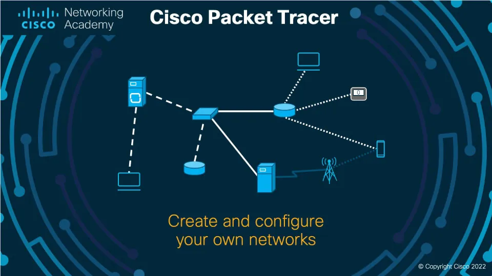

La asignatura de Redes se enfoca en el diseño, instalación, configuración y administración de redes locales y extendidas, protocolos de comunicación, direccionamiento IP, seguridad de red y uso de dispositivos como switches, routers, ...
En esta asignatura me han enseñado a manejarme con un programa llamado Packet Tracer. Con este programa he aprendido a configurar varios dispositivos, tanto en la terminal del dispositivo como en lo grafico.
En esta asignatura no me han mandado trabajos como tal, pero hemos hecho configuraciones a un router fisico.
[ Este es el sitio web de Cisco en donde te explican como funciona Packet Tracer ] 